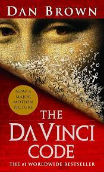
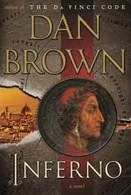
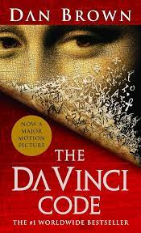
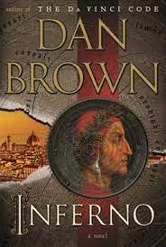
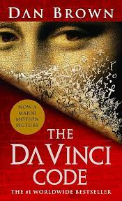
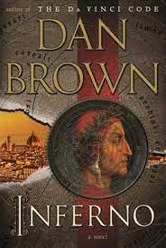
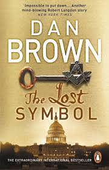

Books Adapted Into Films:
- Angels & Demons
- The Da Vinci Code
- Inferno
 



Daniel Gerhard Brown (born June 22, 1964) is an American author best known for his thriller novels. His novels are treasure hunts that usually take place over a period of 24 hours. Including the Robert Langdon novels. They feature recurring themes of cryptography, art, and conspiracy theories. His books have been translated into 57 languages. Three books adapted into films, while one of them was adapted into a television show.


The Lost Symbol
